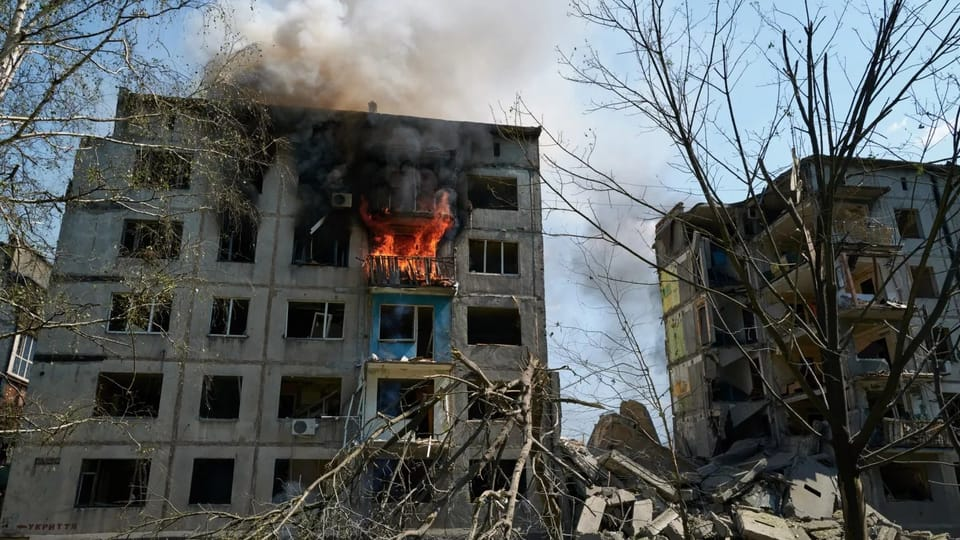

世界苦茶08月22日新闻 | 34条 | 特朗普暂时退出令俄乌直接谈判

特朗普暂时退出令俄乌直接谈判 | 泽连斯基拒绝中国担保俄乌和平 | 台湾国防预算超过GDP的3% | 中国月用电量破万亿千瓦时大关 | 美国德州通过共和党激进重划选区
每日三條新聞解析（模型切换会Gemini）
苦茶数据
美元兑人民币：7.18（昨日7.17，前日7.18）
美元兑日元：148.70（昨日147.38，前日147.52）
上证指数：3796（昨日3775，前日3725）
标普500指数：6370（昨日6395，前日6411）
比特币：113055（昨日113693，前日113604）
布伦特原油：67.63（昨日67.16，前日65.87）
中国新闻
• 川青铁路在建的尖扎黄河特大桥8月22日3时施工绳索断裂。事故救援进行中，截至8时有4人遇难、12人失联。
• 中国月度用电量首破万亿大关 属全球首次： 中国全社会用电量七月历史性突破万亿千瓦时大关，这在全球也属首次。国家能源局今天对外发布了七月全社会用电量，达1.02万亿千瓦时，同比增长8.6%。比十年前翻了一番，相当于东盟国家全年用电量。多轮高温天气与工业生产稳中向好，共同带动用电量较快增长。在持续高温高湿天气拉动下，七月份全国多地负荷创新高，城乡居民生活用电量达2039亿千瓦时，同比增长18.0%。河南、陕西、山东等省居民生活用电量同比增长超过 30%。从七月数据来看，新能源占比显著提升，风电、太阳能、生物质发电量快速增加，占比接近总量的四分之一。
• 习近平接见西藏军区将领王凯缺席 ：中国央视《新闻联播》画面显示，中共总书记、中央军委主席习近平星期三下午接见驻拉萨部队上校以上领导干部时，西藏军区司令员王凯未出席这一活动。央视画面中，坐在习近平右手边的为西藏军区政委袁红刚，左手边的为中央军委委员、军委纪律检查委员会书记张升民。王凯未出席接见，不排除他受到近期军队高层人事变动的牵连。
• 中国未正面承认阿富汗临时政府 ：被问及中国是否承认阿富汗临时政府时，中国外交部未正面回应，仅称愿推进两国关系向前方发展。这意味着中国仍未公开承认塔利班政府的合法性。中国外交部发言人毛宁星期四主持例行记者会。有记者提问，俄罗斯上月正式承认阿富汗临时政府，中国是否承认塔利班阿富汗临时政府？毛宁回应说：“中国奉行面向全体阿富汗人民的友好政策，我们愿同阿方一道推动两国关系向前发展。”
• 中国驻新西兰大使馆批其情报局抹黑 ：中国驻新西兰大使馆发文批评，新西兰安全情报局散布虚假信息，对中国进行污蔑和抹黑。中国驻新西兰大使馆发言人星期四在微信公号上称，新西兰安全情报局星期三发布《新西兰的安全威胁环境》2025年度报告，极具捕风捉影、无中生有、贼喊捉贼的能事，对中国进行无端指责抹黑，中方对此坚决拒绝，强烈反对。发言人指出，上述报告堪称散布虚假信息的教科书，恐怕就是升级版外国干预的结果。
• 中国整治网络转基因谣言 ：中国有关部门和地方持续开展涉转基因谣言处置工作，查处一批造谣传谣的网络账号。据《农民日报》报道，记者从中国农业农村部获悉，中国官方坚决整治利用涉转基因谣言进行吸粉引流、非法牟利等行为，依法依规打击一批恶意编造、传播涉转基因谣言的网络账号主体。这些谣言包括“推广转基因的院士学者都有美国背景”“法国永久禁止所有转基因”“转基因食品会导致生育率下降”“美国正用转基因种子控制中国”“转基因武器是生物战争”等，诋毁有关专家和中共中央生物育种产业化政策，影响恶劣。
• iPhone17量产，富士康郑州招工潮 ：苹果iPhone 17已进入大规模量产阶段，作为苹果手机的主要代工生产商，台湾科技企业富士康通报，郑州厂区正同步启动旺季招工。综合顶端新闻、第一财经等报道，富士康郑州综保园区招募中心外星期一上午，排起了数百米的长队，当中均是前来求职的人群。这样的招工旺季从7月份第四周起延续至10月份，招募中心每天都要接待数千名求职人员。富士康郑州综保园区人资协理方四明受询时说，近期园区的用工需求已有明显攀升，预计在接下来的一段时间，还将持续加大招聘力度以满足生产需求。“前来应聘的人员中，70%员工为两次或多次入职”。
亚太印太新闻
• 台湾国防预算占GDP超3% ：台湾行政院院会星期四通过明年度中央政府总预算案，其中国防预算占境内生产总值比例升至超过3%。综合《联合报》和路透社报道，国防预算部分共计编列9495亿元新台币，比去年增列1768亿元，占GDP达3.32%，比去年增加了0.5个百分点，是自2009年以来首次超过3%。这一举措正逢华盛顿敦促台湾加大自身国防投入之时；台湾总统赖清德本月较早前说，明年的国防预算将达到GDP3%以上。
• 美智库称朝鲜建导弹基地 ：美国智库称，朝鲜在靠近中国边境的地区悄悄建起并运营着一个庞大的远程导弹基地。那里储存着朝鲜最高领导人金正恩最先进的战略武器，展现朝鲜政府为提升核打击能力所付出的努力。据彭博社报道，美国战略与国际研究中心星期三发布的报告显示，上述基地位于朝鲜平安北道新丰区，距离中朝边境27公里，可能驻有一支旅级规模的部队、配备了六至九枚可携带核弹头的洲际弹道导弹和机动发射器。“这些导弹对东亚和美国本土构成了潜在核威胁”。报告引述卫星图像称：“目前的评估显示，在危机或战争时期，这些发射器和导弹将离开基地，与特殊弹头储存、运输单位汇合，然后从预先勘察过的各个地点发射。”
• 日本拟再利用福岛核去污土 ：据悉，为了实现东京电力福岛第一核电站事故产生的福岛县核去污土的最终处置，日本政府汇总了九月起在东京霞关中央省厅约10处地点推进再利用的进度表。还提出将讨论在各省厅的分厅大楼和地方的派出机构等东京以外地区也对去污土进行再利用。若实际施行，将是首次在地方上使用去污土。为实现最终处置，政府秋季前后还将设立新的专家会议。政府七月在东京永田町的首相官邸前庭进行了去污土再利用。中央省厅中，经济产业省和外务省等的花坛和填土使用了去污土。在一核周边的过渡性贮藏设施保管着去污后的土壤和废弃物共约1410万立方米。
科技新闻
• 马斯克与前推特员工达成和解 ：马斯克及其社交媒体公司X Corp已达成了一项初步协议，就前推特员工提起的五亿美元遣散费诉讼达成和解。X 和前推特员工的律师在周三提交给法院的文件中报告了这一协议。双方请求美国上诉法院推迟即将举行的庭审，以便敲定一项协议，向被解雇的员工支付赔偿并结束诉讼。马斯克在2022年收购推特并将其更名为 X后，解雇了大约6000名员工。多名前推特员工因解雇及遣散费问题提起诉讼，另有一些诉讼仍在特拉华州和加州的法院审理。这项和解协议将解决推特前全面薪酬负责人考特尼·麦克米兰和运营经理罗纳德·库珀在加州提起的拟议集体诉讼。
• 特斯拉车机语音助手接入国产大模型 ：特斯拉中国官网《特斯拉车机语音助手使用条款》显示，每辆特斯拉都配备了语音助手功能。车主可以通过物理按键，“嘿，Tesla”或自定义唤醒词激活车机语音助手，进而与车辆进行语音交互。条款还显示，在支持人工智能互动能力的车辆上，车主还可以与语音助手进行轻松聊天，获取天气、新闻等资讯。车主可以通过查阅 “车主手册” 中的语音命令章节，了解如何启用、停用语音助手功能。条款显示，特斯拉车机语音助手将接入火山引擎提供的Doubao大模型和DeepSeek Chat。官方暂未公布AI互动具体上线时间。
• 中国AI初创DeepSeek发布新模型 ：中国人工智能初创企业深度求索发布的升级版模型，提高了思考效率。DeepSeek星期四在官方微信公众号上公告，公司当天正式发布 DeepSeek-V3.1模型，这次升级的主要变化，包含一个模型同时支持思考模式与非思考模式；相比DeepSeek-R1-0528，DeepSeek-V3.1的思考效率有所提高，能在更短时间内给出答案。
• 电子烟大幅增加青少年未来吸烟可能性和健康风险： 国际期刊《烟草控制》最新刊发的一项新研究显示，吸电子烟的青少年后续吸烟可能性显著增加，并与多种健康问题显著相关。这项大规模综合研究由英国约克大学和伦敦卫生与热带医学院研究人员合作展开。研究荟萃分析了关于青少年吸电子烟的56篇综述研究，内容涵盖了 384项相关独立研究。结果显示，吸电子烟的青少年未来成为吸烟者的可能性是不吸电子烟青少年的约三倍。
• 据报英伟达下令暂停 H20 AI 芯片生产： 科技媒体 The Information 引述知情人士报道称，英伟达已经通知部分零部件供应商暂停H20相关的生产作业。 H20是英伟达专为中国市场设计的芯片。另外，就近期市场盛传中国政府出手限制国有企业购买英伟达的H20芯片，英国《金融时报》引述多位知情人士报道，中国国家网信办、发改委和工信部之所以采取行动，是因为美国商务部长卢特尼克关于芯片出口的言论，被中国官员认为“具侮辱性”。卢特尼克7月15日接受采访时称，美国不会把最好的产品卖给他们，第二好的也不会，甚至连第三好的都不会。你想要卖给中国人足够的量，让他们的开发者对美国技术上瘾，这就是我们的想法。
财经新闻
• 美国调查风能进口关税 ：美国政府对进口风力涡轮机及零部件发起调查，此举可能是为对这些清洁能源组件进一步加征关税铺路。根据美国商务部星期四发布的一份公告，它已于上星期三启动一项国家安全调查，以评估风能相关进口产品是否损害国家安全并削弱国内产能。本周，商务部宣布将风力涡轮机及相关零部件纳入适用50%钢铝关税的产品清单中。
• 欧元区商业活动八月扩张 ：尽管面对关税逆风，欧元区的商业活动连续八个月扩张，在8月份达到15个月以来的最高水平。由标普环球发布的汉堡商业银行欧元区采购经理指数，在8月份报51.1点，高于7月份的50.9。指数高于50意味着商业活动处于扩张状态，低于50则是萎缩状态。汉堡商业银行首席经济师鲁比亚说：“尽管面对美国关税和整体不确定的逆风，整个欧元区的商家似乎应付得很好。情况正在改善，制造业和服务业的经济活动都上扬了。”
• 中国育儿补贴免征个税 ：中国官方宣布，按照育儿补贴制度规定发放的育儿补贴将免征个人所得税。中国财政部、国家税务总局星期三发布公告称，为贯彻落实《育儿补贴制度实施方案》有关规定，对按照育儿补贴制度规定发放的育儿补贴免征个人所得税。公告自今年1月1日起施行。根据公告，卫生健康部门与财政部门、税务部门建立信息共享机制。县级卫生健康部门按规定为申领补贴的人员办理个人所得税免税申报。
• 肯尼亚拟将部分对华债务人民币化 ：肯尼亚财政秘书姆巴迪透露，肯尼亚正与中国进行谈判，计划将部分美元计价债务转换为人民币，并延长还款期限。据彭博社报道，姆巴迪星期三在肯尼亚首都内罗毕受访时说，这次谈判的目标是减少肯尼亚每年约10亿美元的对华偿债支出，为紧张的财政预算腾出更多空间。他指出，若能以人民币计价，债务利率“几乎将下降一半”，而延长期限也将为财政可持续性带来显著缓冲。“对我们而言，这是一笔可观的节省。”
• 中国再次暂停阿根廷禽类进口 ：在解除对阿根廷禽类产品的进口禁令不到半年后，中国再次暂停相关产品的报关进口。中国海关总署在官网公布，自星期三起暂停阿根廷禽类产品报关进口，但并未披露更多细节。2023年2月，阿根廷因在商业化家禽中检出高致病性禽流感而暂停家禽出口，中国随即于同年3月实施进口禁令。今年3月，中国宣布结束这项对阿根廷禽类产品长达两年的禁令。
• 阿里口碑推外卖特价拼团“闪拼” ：阿里本地生活在 “外卖大战” 白热化阶段将再落一子。口碑将推出外卖美食特价拼团业务 “闪拼” ，会以小程序的形式内嵌在支付宝应用中，目前该业务小程序已完成开发，择日上线。闪拼的出现，应该是阿里卡位外卖性价比市场的一次尝试，通过 “特价拼团” 模式切入价格敏感型用户群体。这种“低价+社交裂变”的打法，既能吸引学生、下沉市场用户，又能通过 “拼单凑单” 提升客单价，弥补传统外卖单量增长放缓的短板。如果 “闪拼” 能借支付宝的流量与饿了么的履约体系形成协同，或许能与美团拼好饭一争高下。
• 欧盟与美国公布新贸易协议细节 ：欧盟与美国21日发表联合声明，公布了双方在7月达成新贸易协议的具体细节。根据联合声明，美国将对汽车、药品、半导体和木材等大多数欧盟输美商品征收15%的关税。稀缺自然资源、飞机及零部件、仿制药等得到豁免。欧盟承诺取消对美国产工业品的关税，并为美国海产品和农产品提供优惠市场准入。欧盟还计划到2028年前采购7500亿美元的美国液化天然气、石油和核能产品，另采购400亿美元的美国人工智能芯片，同时计划大幅增加对美军工和防务装备的采购。欧盟企业还将在美国战略性行业新增6000亿美元投资。
• 香港酒楼结业潮冲击就业 ：香港酒楼结业潮导致大量劳工失业，餐饮业界人士称，现阶段不需要再输入外劳。据《星岛日报》报道，香港政府统计处发布5月至7月劳动人口统计数字，失业率上升至3.7%，其中餐饮服务活动失业率由6%升至6.4%。香港劳联立法会议员周小松星期四在电台节目上说，就业巿场形势严峻，预计未来失业情况会继续恶化。餐饮业外劳已批出超过3万个名额，已有1.4万名外劳在港就业，还有逾万名获批者正排队，会对本地劳工就业造成更大冲击。
• 中国航司协商空客500架订单 ：中国各家航空公司正协商如何分配一笔涉及500架空中客车飞机的大规模订单。彭博社6月曾报道，中国各家航空公司向欧洲空客订购500架飞机，是中国有史以来规模最大的客机订单之一。据彭博社星期四报道，中国南方航空、中国东方航空、中国国际航空等大型航司计划各自认购100架飞机。厦门航空和四川航空等较小型的航司则预期各自认购35架飞机。
俄乌战争
• 消息人士称，特朗普暂时退后，不直接参与俄乌和平谈判： 据熟悉情况的政府官员透露，唐纳德·特朗普打算暂时让俄罗斯和乌克兰自己组织两国领导人会晤，而不是直接参与，从而在结束俄罗斯入侵乌克兰的谈判中退居二线。官员们表示，在特朗普眼中，结束乌克兰战争的下一步依然是俄罗斯总统弗拉基米尔·普京与乌克兰总统弗拉基米尔·泽连斯基之间的双边会晤。特朗普最近几天告诉顾问，他打算在两位领导人先行会面之后才主持三方会晤，不过那场初始会谈是否会举行仍不明朗，而特朗普也不打算参与推动这场会议。在周二与WABC电台脱口秀主持人马克·莱文的电话采访中，特朗普也表示，他认为普京和泽连斯基第一次见面时最好没有他在场。“我只是想看看那次会晤会发生什么。他们正在筹备，我们会看看结果如何。”
• 普京对乌克兰的要求，放弃顿巴斯、不加入北约、不允许西方军队驻扎： 三名熟悉克里姆林宫高层想法的消息人士向路透社表示，弗拉基米尔·普京要求乌克兰放弃整个东部顿巴斯地区，放弃加入北约的目标，保持中立，并禁止西方军队进入乌克兰。据这些要求匿名讨论敏感事务的消息人士透露，俄罗斯总统上周五在阿拉斯加与唐纳德·特朗普举行了四年多来首次美俄峰会，两人在三小时的闭门会谈中几乎全程讨论了乌克兰可能的妥协方案。会后，普京与特朗普一同表示，希望这次会议能为乌克兰和平开辟道路——但两位领导人都没有透露具体讨论内容。根据迄今为止最详细的俄罗斯消息来源报道，路透社梳理出克里姆林宫设想中的潜在和平协议大致轮廓，以结束这场已造成数十万人死伤的战争。 （翻評：根據上面兩條內容，這次應該會不了了之。）
• 泽连斯基拒绝中国担保俄乌协议 ：对于俄罗斯提出让中国在俄乌停火协议中担任安全担保国的建议，乌克兰总统泽连斯基表示拒绝，并称中国在战争中始终站在莫斯科一边，不适合扮演保障乌克兰安全的角色。综合法新社和彭博社报道，泽连斯基星期四受访时说：“第一，中国在战争初期并没有帮助我们阻止冲突。第二，中国通过开放无人机市场协助俄罗斯。我们不需要那些在乌克兰真正需要时没有伸出援手的担保国。”此前，美国总统特朗普星期一与泽连斯基会面后，承诺将在未来的俄乌和谈协议中为乌克兰提供安全保障。
• 拉夫罗夫称俄愿展开真诚谈判 ：俄罗斯外交部长拉夫罗夫表示，俄罗斯愿意就解决乌克兰问题展开任何形式的谈判，只要谈判是“真诚”的。据塔斯社、俄新社引述拉夫罗夫的话报道，高层会晤必须在所有前期阶段都经过最谨慎的准备后才能举行。他指出，只有这样，才不会导致局势恶化，而是能够真正解决问题。拉夫罗夫说，俄方认为，欧洲方面试图改变美国在乌克兰问题上的立场，使美方重新回到利用乌克兰威慑俄罗斯的老路上，这是“不道德的尝试”。他强调，没有俄罗斯参与，欧洲的集体安全问题就无法解决。
• 俄再度大规模空袭乌克兰西部 ：乌克兰空军8月21日称，俄罗斯20日夜间至21日凌晨发射了574架无人机和40枚导弹。袭击主要针对乌克兰西部地区。据信乌克兰西方盟友的军援储存在这些地区。空袭造成至少1人死亡、15人受伤。俄罗斯国防部称，袭击目标是乌克兰的军工复合体，声称击中了无人机工厂、储存库、导弹发射场以及乌克兰军队集结地等。乌克兰总统泽连斯基谴责此次袭击，称俄罗斯没有表现出进行有意义的谈判以结束战争的迹象，敦促国际社会施加更强有力的压力。熟悉克里姆林宫高层的消息人士称，俄总统普京要求乌克兰放弃整个顿巴斯地区，放弃加入北约并保持中立，要求西方军队不得部署在乌克兰。消息人士警告，如果乌克兰不准备割让顿巴斯，战争将继续下去。特朗普21日下午发帖批评前总统拜登限制乌克兰反击俄罗斯本土的过往政策，暗示他可能会鼓励乌克兰进攻俄罗斯。
• 立陶宛设禁飞区防无人机 ：北约成员国立陶宛星期四宣布，在首都维尔纽斯与白罗斯接壤的边境设立禁飞区，直至10月1日，以应对来自白罗斯的无人机入侵事件。立陶宛国防部发言人在一份声明中说：“此举是为了应对安全局势和对社会的威胁，包括无人机侵犯领空对民航造成的风险。”声明指出，设立禁飞区便于武装部队对侵犯领空的情况作出反应。立陶宛与俄罗斯盟友白罗斯共享长达679公里的边界，而维尔纽斯距离边境约30公里。根据立陶宛当局的通知，禁飞区于8月14日设立，并从地面延伸至海拔1万2000英尺，进入这一区域的飞行器可能面临被拦截或交战的风险。
国际新闻
• 内塔尼亚胡批准加沙计划 ：以色列总理内坦亚胡发表视频声明说，他已批淮接管加沙城并同时“击败哈马斯”的军事计划。以色列将立即启动谈判，争取在押人员获释，并结束战争。内坦亚胡在星期四对驻扎加沙地带的士兵发表讲话时说，以色列正处于决策阶段，他正与指挥官会面，批淮攻占加沙城并击败哈马斯的计划。他还指示立即重启与哈马斯的谈判，以使所有在押人员获释并在以色列可接受条件下，结束加沙地带持续近两年的战争。面对国际社会的谴责，以色列军方持续对加沙城进逼。军方已发布命令，征召6万名预备役军人，此举代表以色列政府正准备占领加沙市。
• 英国116岁女性庆生 ：世界最长寿的女性、英国人凯特勒姆在星期四庆祝116岁生日。凯特勒姆是在巴西修女鲁卡斯今年4月底过世后，接过世界最长寿女性的头衔。史上最长寿的女性是法国人卡尔芒，她1997年逝世时享寿122岁164天。凯特勒姆居住的养老院星期四说，她在生日当天会安静地与家人一同度过，“以‘自己的速度’过这特别的一天。凯特勒姆与家人对所有善意的祝福和关注表示感激”。
• 特朗普部署两栖中队赴委内瑞拉近海 ：据美国媒体报道，美国总统特朗普决定部署一支两栖中队前往委内瑞拉附近的加勒比海域，以“打击拉美贩毒集团”。媒体星期三的报道引述消息人士的话说，三艘美国战舰最快将于24日抵达委内瑞拉海岸附近。这些舰艇共载有约4500名军人，其中包括2200名海军陆战队员。消息人士没有透露该中队执行的具体任务，但称这一部署是为应对该地区“毒品恐怖组织”对美国国家安全构成的威胁。
• 得州众议院通过共和党重划选区议案 ：美国得克萨斯州民主党人结束“出走”后，共和党人占压倒性多数的州众议院通过美国总统特朗普直接推动的重划国会选区议案，有望使共和党在明年中期选举时在得州多获得五个国会众议院席位。议案星期三以88票赞成、52票反对的结果获得通过。在进行投票前，得州民主党州众议员提出12项修正案，均遭否决。新华社引述得州媒体的报道说，当天州众议院辩论时，共和党州众议员、重划国会选区议案发起人亨特称，共和党有权重新划分选区，“以最大限度地实现党派利益”。民主党州众议员伊诺霍萨则质问：“为什么应对7月4日致命洪水的救济法案，没有成为得州众议院本次特别会议的首要议程？” （翻評：加州現在必須反制。）